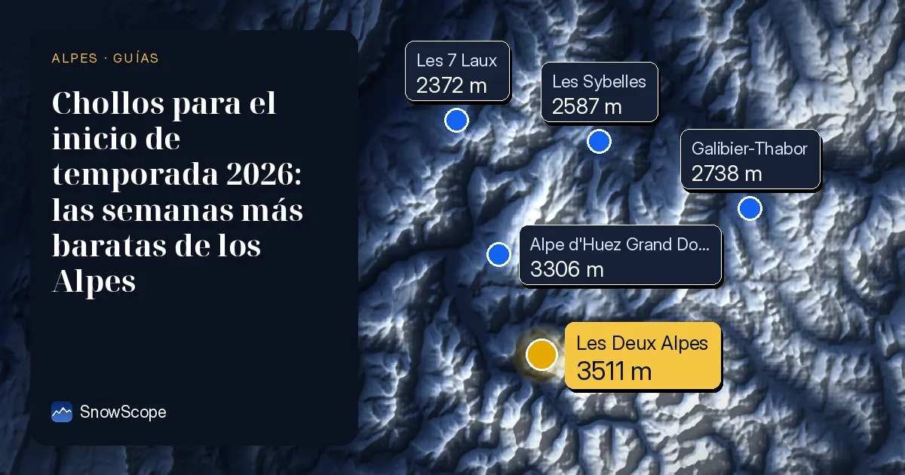
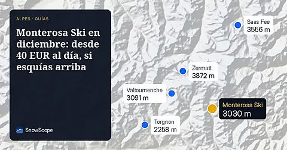
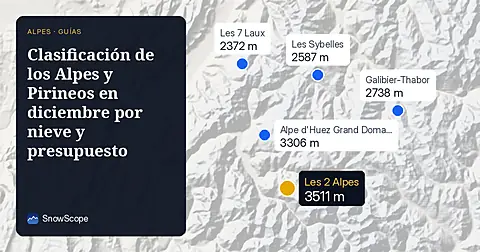

Chollos para el inicio de temporada 2026: las semanas más baratas de los Alpes
Los días más baratos de la temporada de esquí son los primeros. Valloire-Valmeinier abre el 5 y 6 de diciembre de 2026 con un forfait de 20 EUR, Les 2 Alpes vende su fin de semana de apertura del 28 y 29 de noviembre por 42 EUR, y Les Orres cobra 34 EUR al día del 5 al 11 de diciembre. Hemos reunido los mejores chollos de inicio de temporada en un calendario y hemos comprobado cuánta nieve suele haber en esas fechas.
Consulta la previsión de nieve en tiempo real de Les Deux Alpes en la app SnowScopeEspesor de nieve, alertas de nieve polvo y mapa 3D, gratis.
Finales de noviembre: el primer fin de semana sobre la nieve
Les 2 Alpes abre la temporada el 28 y 29 de noviembre de 2026 con un forfait de día de adulto a 42 EUR, frente a los 68 EUR de su tarifa flexible normal. El glaciar sobre la estación es la razón por la que puede abrir tan pronto: a media montaña, a 2397 m, nuestro histórico de nieve de 46 inviernos pasados muestra 24 cm en un noviembre habitual, y en la parte alta hay mucha más.
Livigno empieza su promoción ese mismo fin de semana. Del 28 de noviembre al 18 de diciembre de 2026 un día de adulto cuesta 51,5 EUR y 6 días 258,5 EUR. Del 19 al 25 de diciembre el precio del día sube a 66 EUR, y a partir del 26 de diciembre es de 74,5 EUR.
Principios de diciembre: las gangas de verdad
El fin de semana de apertura de Valloire-Valmeinier, el 5 y 6 de diciembre de 2026, es el chollo más barato que hemos encontrado: 20 EUR por el forfait, pista de hielo incluida. Su precio de día estándar para el invierno es de 54,9 EUR. A media montaña la estación suele pasar de 24 cm en noviembre a 67 cm en diciembre, así que el fin de semana de apertura suele celebrarse con una base todavía joven.
Les Orres usa un calendario de precios: 34 EUR al día del 5 al 11 de diciembre, 38,5 EUR del 12 al 18 de diciembre y 45,5 EUR a partir del 19 de diciembre. Montgenèvre mantiene 45,5 EUR hasta el 18 de diciembre, y luego sube a 56 EUR. En el valle de Aosta, Monterosa Ski vende online con precios que varían: el día más barato que hemos visto fue de 40 EUR, y el más caro de 71 EUR.
La semana antes de Navidad: 6 días por menos
Para una semana completa, Serre Chevalier es el chollo clásico de inicio de temporada: 276 EUR por 6 días desde la apertura hasta el 18 de diciembre de 2026, frente a los 345 EUR del 19 de diciembre al 1 de enero de 2027. La promoción de 258,5 EUR de Livigno llega hasta esa misma fecha.
La nieve suele acumularse rápido en diciembre. A media montaña, un diciembre habitual deja 77 cm en Les 2 Alpes, 64 cm en Montgenèvre, 57 cm en Serre Chevalier, 54 cm en Les Orres, 48 cm en Livigno y 35 cm en Monterosa Ski. Cuanto más tarde vayas en diciembre, mejores son tus opciones.
Cómo elegir tu chollo de inicio de temporada
Si quieres asegurarte de poder esquiar, ve a cotas altas: Les 2 Alpes a finales de noviembre, o Montgenèvre y Valloire-Valmeinier en diciembre. Si buscas la factura más baja para una semana, Serre Chevalier y Livigno antes del 18 de diciembre son las apuestas más seguras, con dominios grandes que abren más pistas a medida que llega la nieve.
Monterosa Ski es la que hay que vigilar día a día: reserva sus precios bajos online solo después de una buena nevada, ya que su diciembre habitual es el más flojo de la lista.
Duerme en las fechas del chollo
Las semanas de inicio de temporada también son las más baratas para el alojamiento, pero solo si tus noches coinciden con la oferta. El mapa de este artículo abre cada estación en las fechas de su chollo, con estancias por debajo de 120 EUR la noche: el fin de semana del 27 al 29 de noviembre para Les 2 Alpes, del 4 al 6 de diciembre para Valloire-Valmeinier, del 5 al 11 de diciembre para Les Orres, y del 12 al 18 de diciembre para Livigno y Serre Chevalier.
Las fechas de apertura siempre dependen de la nieve. Consulta la web de la estación unos días antes de salir, y compra el forfait online cuando sea más barato.
Consejos para esquiadores
- Chollo más barato: Valloire-Valmeinier, 20 EUR el 5 y 6 de diciembre de 2026.
- Primer fin de semana sobre la nieve: Les 2 Alpes, 42 EUR el 28 y 29 de noviembre de 2026.
- Semana más barata antes de Navidad: Livigno 258,5 EUR o Serre Chevalier 276 EUR por 6 días, hasta el 18 de diciembre.
- Comprueba siempre la fecha de apertura: depende de la nieve.
Más mapas (sitios externos)
Referencias y créditos
- Les 2 Alpes, official ski pass shop, opening weekend offer www.skipass-2alpes.com/fr/forfaits/ski
- Les 2 Alpes, official ski pass shop, prices 2026-27 www.skipass-2alpes.com/en/pricing
- Valloire, official ski pass shop (Galibier-Thabor), winter 2026-27 skipass.valloire.com/fr/
- Les Orres, official ski pass prices 2026-27 www.lesorres.com/forfaits-de-ski
- Livigno, official ski pass price list 2026-27 (PDF) www.livigno.eu/hubfs/tariffe_26-27.pdf
- Montgenèvre, official ski pass prices 2026-27 skipass.montgenevre.com/fr/tarifs-guichet
- Serre Chevalier, official booking site, ski passes 2026-27 reservation.serre-chevalier.com/achetez-vos-ski-pass-serre-chevalier-et-autres-prestations.html
- Monterosa Ski, official dynamic pricing page 2026-27 monterosaski.eu/en/tariffazione-dinamica-monterosa-ski-19318
Sobre estas cifras
Cifras de nieve: histórico de nieve de SnowScope, 46 inviernos pasados (1980-81 a 2025-26) a tres alturas de la estación, un modelo del pasado corregido por altitud (una estimación para una zona, no partes de la estación). Remontes, pistas y acceso: las fuentes de abajo, comprobadas en la fecha indicada.
Citar este informe
Para investigación, docencia o prensa: cifras y gráficos reutilizables libremente bajo CC BY 4.0 con esta cita.
SnowScope (2026), Chollos para el inicio de temporada 2026: las semanas más baratas de los Alpes, https://snowscope.app/blog/es/2026/11/early-season-ski-deals-2026-cheapest-opening-weeks-alps.html, consultado el 2026-11-19
SnowScope (Atlas Labs). (2026, November 19). Chollos para el inicio de temporada 2026: las semanas más baratas de los Alpes. SnowScope snow reports. https://snowscope.app/blog/es/2026/11/early-season-ski-deals-2026-cheapest-opening-weeks-alps.html
BibTeX
@misc{snowscope2026earlyseasonskideals2026c,
author = {{SnowScope (Atlas Labs)}},
title = {Chollos para el inicio de temporada 2026: las semanas más baratas de los Alpes},
year = {2026},
month = nov,
howpublished = {\url{https://snowscope.app/blog/es/2026/11/early-season-ski-deals-2026-cheapest-opening-weeks-alps.html}},
note = {Published 2026-11-19 12:42 UTC; accessed 2026-11-19}
}· CC BY 4.0 · Métodos, datos y herramientas →
Les Deux Alpes: nieve y temperatura según la altura, este invierno vs el pasado (herramientas) →
Sigue Les Deux Alpes
Gratis: un aviso cuando llega la nieve y la previsión cada mañana.
Más partes de nieve

En Monterosa Ski el forfait de día online va de 40,00 a 71,00 EUR. En diciembre la nieve está arriba: 124 cm habituales a 3030 m, 6 cm a 1207 m.

Esquía en Livigno por 51,50 EUR al día antes del 18 de diciembre, cuando la nieve en la cima alcanza los 30 cm en el 100 % de los inviernos pasados.

Diez estaciones de esquí europeas clasificadas por su valor en diciembre, lideradas por Les 2 Alpes con 75 cm de nieve a media montaña.